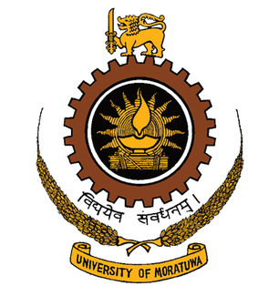

Overview of ITUM

The Institute of Technology was established on
10th March 2000 by the Honourable Minister of
Education and Higher Education primarily to conduct NDT and other similar level courses
at the
University of
Moratuwa.
Vision
To be the centre of excellence in Technological Education.
Mission
To be a dynamic technological institute in the region and actively contribute to the educational,
economic and social advancement of Sri Lankan community by:
- Providing accessible, flexible and efficient technological education and skills training to
meet the needs
of society and the industry.
- Providing an environment for innovation and creativity.
- Formulating an active collaboration with the industry, business and the community for career opportunities.
- Enhancing social and economic pathways and opportunities for young people.
Introduction to the Course
The primary aim of the National Diploma in Technology (NDT) course is to produce mid-level professionals
required by the industry of our country in various engineering technology disciplines. We conduct the NDT
programme in English medium in ten disciplines with a total intake of 800. The breakdown is as follows:
- Chemical Engineering Technology - 50
- Civil Engineering Technology - 200
- Electrical Engineering Technology - 100
- Electronic and Telecommunication Engineering Technology - 100
- Marine Engineering Technology - 20
- Mechanical Engineering Technology - 100
- Nautical Studies - 20
- Polymer Technology - 50
- Textile and Clothing Technology - 60
Information Technology - 100
Visit Us for More Information